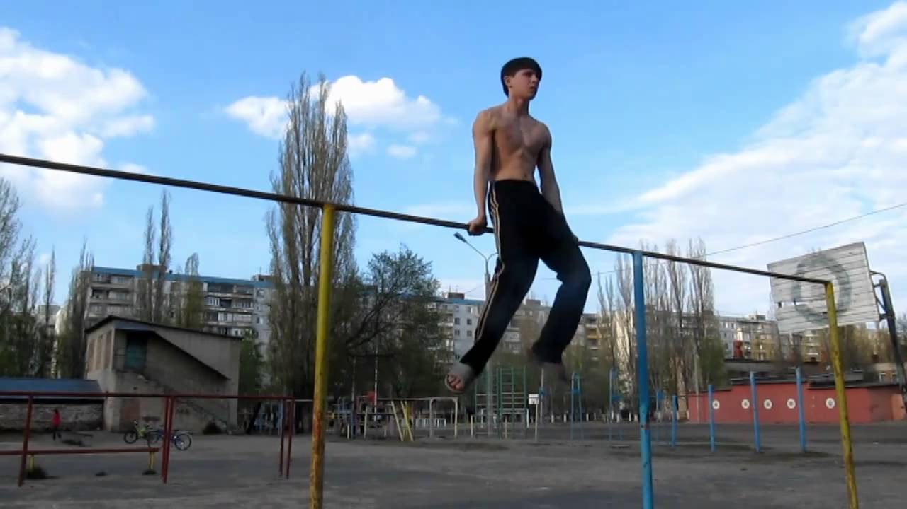

Спорт
Спорт – это неотъемлемая часть общественной жизни, один из элементов системы ценностей современной культуры.
Тем не менее общепризнанного определения этого слова, несмотря на его важность и популярность во всём мире, пока нет. В разных зарубежных источниках даны разные определения:
спорт — это деятельность, направленная на совершенствование физического развития, участие в соревнованиях и подготовка к ним согласно определённым правилам (Французская энциклопедия Вебера);
это универсальная форма отдыха, одно из средств самоутверждения (Английская энциклопедия);
спорт — это комплекс мероприятий, средств и деятельности, целью которых является достижение высоких результатов в состязаниях, физическое образование и активный отдых людей в свободное время (Немецкий энциклопедический словарь);
это игровое состязание, требующее определённого мастерства, которое достигается путём физических тренировок (Всемирный энциклопедический словарь).
В России впервые определение слова «спорт» появилось в Словаре Брокгауза и Эфрона в 1890 году. Согласно этому источнику, понятие означало стремление к достижению чего-либо особенно выдающегося в сфере телесных упражнений.
Спорт, несомненно, воздействует на человека, способствует удовлетворению и развитию определенных потребностей личности и общества.
Все более важным становится его значение в воспитании детей и подростков, формировании правильного образа жизни. К спортивной деятельности приобщается всё больше людей разного возраста и профессий.

Спорт очень многолик – существует не только довольно большое количество его видов, которые значительно отличаются между собой, но и сама спортивная деятельность часто решает совершенно разные задачи и имеет различную направленность.
Главная страница
Армреслинг
Воркаут
Баскетбол